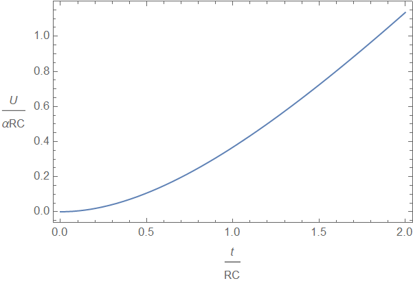
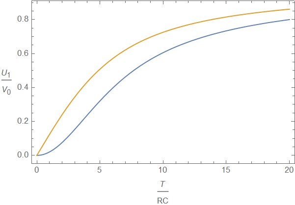
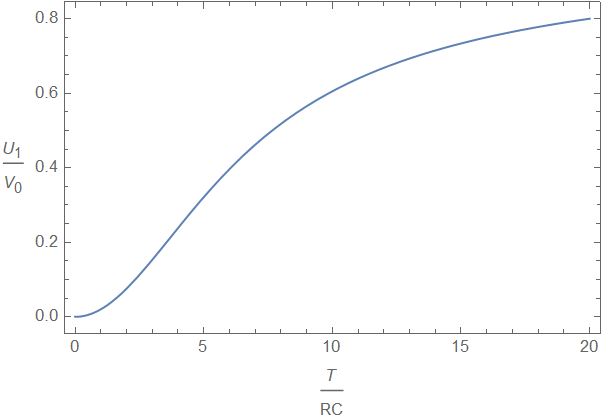

W23 (2023) — English translation
Instantaneous value of the current through the capacitor $$ I = \frac{V_0 - U}{R}. $$ Current equal derivative charge capacitor $I = \cfrac{dq}{dt}$, and/but charge one can express through voltage. $q = CU$, from which $I = C\cfrac{dU}{dt}$, therefore equation on voltage $$ \frac{dU}{dt} = \frac{1}{RC} \left( V_0 -U\right), $$ and its solution
$I = C\cfrac{dU}{dt}$
During the entire time, charge $q= CV_0$ passes through the circuit, on which work $A=V_0 q = CV_0^2$ is performed. The final energy of the capacitor is $W = CV_0^2/2$, and the heat is $Q = A - W$
The voltage equation is the same as in the first paragraph, and its solution, taking into account the initial conditions
During charging, a charge $q = C (V_0 - U_1)$ flows through the circuit, a change in the energy of the capacitor $\Delta W = \cfrac{C V_0^2}{2}-\cfrac{C U_1^2}{2}$, the work of the source $A = V_0 q$, so the released heat is $$ Q = A - \Delta W = C V_0^2 - C V_0 U_1 - \cfrac{C V_0^2}{2} + \cfrac{C U_1^2}{2} = \frac{C (V_0 - U_1)^2}{2} $$
The charge of the capacitor after a long time is $q = CU \approx C V = C \alpha t$, and the current is $I = dq/dt$
Power after process establishment $P = I^2 R \approx C^2 \alpha^2 R$
From the equation it is clear that the current increases, as does the voltage across the capacitor when charging it, with the maximum current value $C \alpha$, and the characteristic time of current change $\tau = RC$, as when charging the capacitor.
The charge on the capacitor can be found by integrating the current (with the initial charge being zero): $$ q = \int_0^t I(t) dt = C \alpha \left( t- RC \left( 1 - e^{-t/RC}\right)\right)= C \alpha \left(t - RC + RCe^{-t/RC} \right), $$ and/but voltage $U = q/C$

The resistor releases power $P = I^2(t) R$, integrating it, we find the released heat $$ Q = \int_0 ^t I^2(t) R dt = C^2 \alpha^2 R \int_0 ^t \left(1 - e^{-t/RC} \right)^2 dt $$
This task is similar to the task from point A4. Here, as the initial voltage, you need to use the voltage at time $T$. You also need to use the $V_0 = \alpha T$ ratio. Then $V_0 - U_1 = \alpha RC \left(1 - e^{-T/RC} \right)$.
This amount of heat can be calculated using the result from A5. $$ Q_2 = \frac{C (V_0 - U_1)^2}{2}= \frac{1}{2}\alpha^2 R^2 C^3 \left(1 - e^{-T/RC} \right)^2. $$
We add up the answers from B9 and B11, present similar terms, and replace $\alpha = V_0/T$.
$Q_0 = CV_0^2/2$, taking into account this $$ k = \frac{2RC}{T} - \frac{2 R^2 C^2} {T^2} \left(1 - e^{-T/RC} \right). $$ On larger time второе term много меньше first, $$ k \approx \frac{2RC}{T}. $$ Note also, that for маленьких time $$ e^{-T/RC} \approx 1 - \frac{T}{RC} + \frac{T^2}{2 R^2 C^2} -\frac{T^3}{6 R^3 C^3}, $$ therefore $$ k \approx 1 - \frac{T}{3RC}. $$
In steady state, opposite values of the external voltage correspond to opposite voltage values on the capacitor.
The input voltage in the section under consideration is $$ V = V_0 - \frac{4 V_0}{T} t. $$ in equation for current входит only $dV/dt$, therefore constant term on it not влияет. Then equation coincide with equation from part B5 s $\alpha = - 4V_0/T$.
After a long time, the current will be equal to $I_2 = - 4 C V_0/T$, and the general solution of the equation has the form $$ I = I_2 + (I_1 - I_2 )e ^{-t/RC} $$
Change in charge on the capacitor during voltage decrease $$ \Delta q = \int_0 ^{T/2} I(t) dt = - 2 C V_0 + RC \left( \frac{V_0- U_1}{R} + \frac{4 CV_0 }{T} \right) \left(1 - e ^{-T/2RC} \right), $$ then change voltage $$ \Delta U = \frac{\Delta q}{C} = U_2 - U_1= -V_0 - U_1 + \frac{4RC}{T} V_0 - \left(V_0 - U_1 + \frac{4 RC}{T} \right) e^{-T/2RC}. $$
Solving the equation $U_2 = - U_1$ for $U_1$ we find (for convenience of writing, we use the so-called hyperbolic function $\tanh x$; if desired, the answer can be written simply in terms of exponentials.) For large values of the argument $\tanh x \approx 1$ and $U_1 \approx V_0 \left(1 - 4RC/T \right) \approx V_0$, for small values of the argument $\tanh x \approx x - x^3/3$, $U_1 \approx \cfrac{T^2}{48 R^2 C^2}V_0$. If the answer to the behavior of a function cannot be obtained analytically, this can also be done numerically by calculating values for small values of time $T/RC$. So we can verify that at small times $U_1 \sim T^2$.
Note that the value $U_1$ is not actually the maximum voltage value across the capacitor, since the capacitor continues to charge some time after the input voltage has begun to decrease. The maximum voltage value is reached when the current through the capacitor becomes 0, after which the sign of the current changes and the capacitor begins to discharge. This time $t_1$ can be found from the condition $$ I(t_1) = 0 = - \frac{4 CV_0 }{T} + \left( I_1 + \frac{4 CV_0 }{T} \right) e^{- t_1/RC}, $$ therefore $$ e^{-t_1/RC} = \frac{4 CV_0/T}{I_1 + 4 CV_0/T}, \quad I_1 = \frac{V_0 - U_1}{R} = \frac{4 C V_0}{T} \tanh \frac{T}{4 RC}. $$ Over time $t_1$ in capacitor затечет additional charge $$ \Delta q_1 = \int _0 ^{t_1} I(t) dt= - 4 C V_0 \frac{t_1}{T} + + RC \left( I_1 + \frac{4 CV_0 }{T} \right) \left(1 - e ^{-t_1/RC} \right). $$ Substitute in второе сложение expression for exponential and voltage $U_1$ obtain $$ \Delta q_1 = - 4 C V_0 \frac{t_1}{T} + RCI_1. $$ Then maximum voltage $$ U_{\text{max}} = U_1 + \frac{\Delta q_1}{C} = V_0 - 4 V_0 \frac{t_1}{T} = V_0 \left(1 - \frac{4RC}{T} \ln\left(1 + \tanh \frac{T}{4 RC} \right) \right). $$ This voltage larger $U_1$, for small in time values it depends linearly on time.

